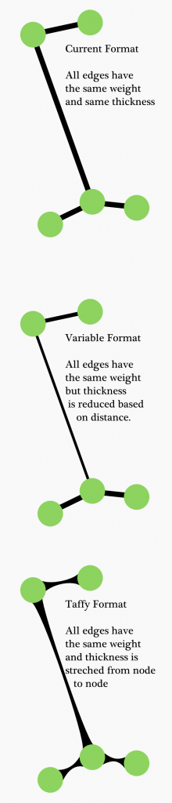
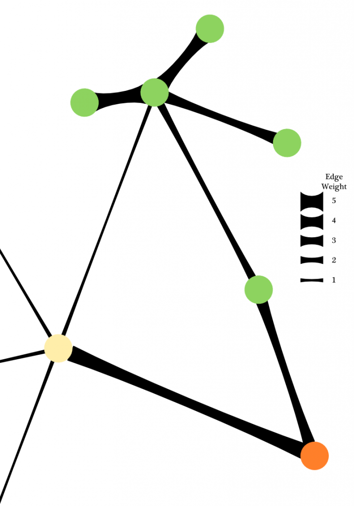

It would be useful for network representation to embed within the representation of edges some visual cue as to whether the edges are longer or shorter based on strength of connection as opposed to other reasons (strength of repulsion, manual shifting of node positions, strength of attraction between opposing clusters). One way to represent this is through what I call Taffy Edges:

Originally, I thought of taffy edges as only useful for giving visual cues as to the distance between nodes, but if edge weight is represented by thickness, then the deformation that occurs with significant stretching (relative to the network, as with graphs that are laid out using force-directed algorithms) of the taffy edges relays a useful point of data: whether or not a node is in its relative position due primarily to the strength of its edges or if the strength of those edges are being overriden by some other force. Here’s a simple example:
In this case, we know that the yellow node is being pulled away from its strongest connection by several weaker connections, a typical situation in force-directed algorithms, but we also know that the distance between the yellow node and the orange node is significantly higher than it “should” be (based on the distance of connections of equal weight in the rest of the visible network) and therefore this is a high-stress connection.
I’ll continue to work out the details, for instance I dislike the fact that the 4 and 3 weight connections in the green module don’t appear to be “at rest” and my intuition is that there’s a real physical phenomenon that needs to be emulated in the visual representation to achieve the proper appearance of rest and tension, but I think this would provide a more useful representation of edge weight and interplay than traditional flat weighted edges.